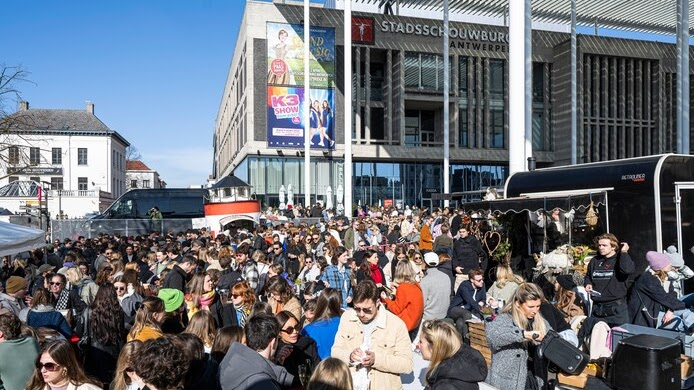

Tabakvest 85 bevindt zich in een unieke locatie in de 16de-eeuwse binnenstad van Antwerpen. Een plek waar geschiedenis, student energie en moderne voorzieningen perfect samenkomen.
Woonerf
Tabakvest is heringericht als een woonerf. Dit betekent dat wandelaars en fietsers hier baas zijn. De straat is een veilige, rustige en aangename plek waar studenten kunnen studeren, relaxen en elkaar ontmoeten. Perfect voor concentratie en een goed nachtrust!

Bruisende Buurt - Levendig Studenten Centrum
Direct om de hoek van Tabakvest liggen twee van de meest levendige pleinen van Antwerpen: de Leopoldplaats en de Oudevaartplaats (bekend als "de vogeltjesmarkt"). Deze pleinen zijn het hart van het studentenleven met talloze cafés, restaurants en bars.
De Stadsschouwburg is letterlijk om de hoek, wat betekent dat theater, cinema en culturele evenementen direct beschikbaar zijn.
Oudevaartplaats - De Vogeltjesmarkt
Deze historische markt is een echte Antwerp geheimtip. Hier vind je gezelligheid, lokale winkels, antiquairs en vooral veel sfeer. Perfect voor een zondagochtend wandeling of een koffie op een terras.
Loopafstand: Slechts 2 minuten van Tabakvest 85

Alles Binnen Handbereik
Winkelzone Meir
5 minuten lopen - De chique winkelstraat van Antwerpen met alle grote merken
Hogescholen & Universiteiten
Directe omgeving - KASK, AP, UA en andere onderwijsinstellingen in de buurt
Openbaar Vervoer
Om de hoek - Halte Antwerpen Nationale Bank (tram, bus) voor gemakkelijk reizen
Centraal Station
Wandelafstand - Gemakkelijke verbindingen naar overal in België
Restaurants & Cafés
Overal in de buurt - Van studentencafés tot fine dining, alles is dicht bij
Groenruimtes
10 minuten - Park en griffen voor ontspanning en sporten
Bereikbaarheid
Adres: Tabakvest 85, 2000 Antwerpen
Met Auto: Parking Nationale Bank vlakbij (betaald parkeren)
Met Fiets: Antwerpen is fietsenstadstad - fietspaden overal
Met OV: Halte Antwerpen Nationale Bank is 30 seconden lopen
Te Voet: Alles is loopafstand in het centrum
Waarom Tabakvest 85 de Perfecte Locatie is
- ✓ Rustig wonen: Woonerf = veilige, rustige straat
- ✓ Levendig uitgaan: Leopoldplaats & Vogelmarkt om de hoek
- ✓ Centraal gelegen: Alles bereikbaar te voet of fiets
- ✓ Goed vervoerd: Openbaar vervoer en treinstation dicht bij
- ✓ Studeervriendelijk: Rustig en vol medestudenten in de buurt
- ✓ Historisch centrum: Unieke sfeer van Antwerpen
Interesse? Kom eens langs!
Bel ons of stuur een mail, we geven graag een rondleiding door Tabakvest en de buurt.
tabakvest85@gmail.com
+32 495 91 65 13
Volg ons ook op Facebook: Tabakvest 85